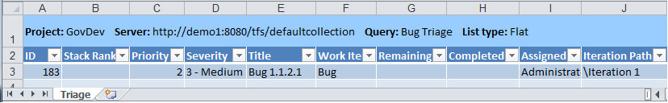

You can use the Triage workbook to rank and assign bugs to be worked on for an iteration, also referred to as a sprint. Triage is the process that a team uses to review newly reported or reopened bugs, assign a priority and iteration to them, and assign a team member to fix them. Triage is driven by the product owner or scrum master with input from the team.
The default workbook query displays a flat list of all active bugs that are defined for the team project.
|
|
|---|
|
The Triage workbook is stored on the server that hosts SharePoint Products for your team project. If a project portal has not been enabled for your team project, you cannot access the workbook. For more information, see Access a Team Project Portal and Process Guidance. When you open the workbook, click Edit Workbook next to Server Workbook so that you can modify the workbook. For more information, see Workbooks (GovDev). If the workbook is not available to you, you can open the Triage team query by using Team Explorer or Office Excel. This topic describes how to triage bugs by using Office Excel. For information about how to triage bugs in the list of query results, see Modify Work Items within a List View. |
|
In this topic |
To access the Triage workbook
Open Team Explorer, open the Shared Documents folder, and
then open the Triage workbook as the following illustration
shows: Or open Team Explorer, open the Work Items folder, and then
open the Triage team query, as the following illustration
shows: |
Required Permissions
To view a team query or open a workbook, you must be assigned or belong to a group that has been assigned Read permissions for the team query folder for the team project. To modify a query, you must be assigned or belong to a group that has been assigned Contribute or Full Control permissions for the team query. For more information, see Organize and Set Permissions on Work Item Queries.
To create or modify bugs by using the query or workbook, you must be a member of the Contributors group or your View work items in this node and Edit work items in this node permissions must be set to Allow. For more information, see Team Foundation Server Permissions.
 Bugs
Listed in the Triage Workbook
Bugs
Listed in the Triage Workbook
You can use the Triage workbook to manage active bugs. The Triage worksheet references the Triage team query, which is configured to find all active bugs for the team project. The following illustration shows an example of the workbook in Office Excel.

Triaging
Bugs
A team can use the Triage workbook to change the Stack Rank, Priority, Severity and Assigned To values for active bugs.
To triage bugs
-
In the Triage workbook, click the Triage worksheet.
-
If you have opened a saved workbook, on the Team tab, in the Work Items group, click Refresh.
This step helps make sure that the list of bugs contains the most current information.
-
Review each active bug.
-
With input from developers, testers, and product managers, determine the importance of fixing each bug to support the goals of the project and the current iteration.
-
Assign a priority, severity, and rank to each newly active bug. Also, specify an iteration to fix each bug that will allow the development team to schedule and address it in a timely fashion.
 Note
Note
If a bug report is unclear or the true impact of the bug is unknown, the bug report should be clarified. Members of the team should attempt to reproduce the bug so that they have a good understanding of its real impact and reproducibility.
-
For unassigned bugs, in the Assigned To list, click the name of the team member to address the bug.
-
Review the bug list, and adjust the priority, rank, and severity values to support current priorities.
Note
Use the editing features in Office Excel to change the values for multiple cells. For more information about how to modify cells in a worksheet, see topics about how to enter and edit data in the Help for Office Excel.
Update the following fields as needed:
Field Name
Description
Priority
A subjective rating of the bug as it relates to the business. You can specify the following values:
-
1 - Product cannot ship without the successful resolution of the bug, and it should be addressed as soon as possible.
-
2 - Product cannot ship without the successful resolution of the bug, but it does not need to be addressed immediately.
-
3 - Resolution of the bug is optional based on resources, time, and risk.
Stack Rank
A subjective rating of the bug compared to other bugs. A bug that is assigned a lower number should be fixed before a bug that is assigned higher number.
Severity
A subjective rating of the impact of the bug on the project. You can specify the following values:
-
1 - Critical
-
2 - High
-
3 - Medium
-
4 - Low
-
-
On the Team tab, in the Work Items group, click Publish.
For more information, see Publish Work Items in Office Excel.
-
Save and close the workbook.
Reordering
the List of Bugs
You can reorder the bugs that are listed in the Triage workbook by using the Office Excel feature for sorting rows.
To reorder the bugs that are listed in the workbook
-
To reorder the bugs, perform one of the following actions:
-
Click the
 down arrow next to Stack Rank, and then click Sort
Smallest to Largest.
down arrow next to Stack Rank, and then click Sort
Smallest to Largest. -
Click the
down arrow next to Priority, and then click
Sort Smallest to Largest.
-
-
(Optional) Save the workbook.
Filtering
the List of Bugs to be Triaged
You can filter the bugs that appear in the Triage workbook in the following ways by using the Office Excel feature for filtering rows:
-
Filter on Stack Rank, Priority, or Severity to list only those bugs of a rank, priority, or severity that you specify.
-
Filter on Assigned To to list only those bugs that are assigned to a team member that you specify.
-
Filter on Iteration to list only those bugs that are assigned to an iteration that you specify.
Note
The Iteration tree hierarchy is defined by your project administrator for the team project. For more information, see Create and Modify Areas and Iterations.
To filter the bugs that appear in the workbook
-
Perform one or more of the following steps:
-
Click the
down arrow next to Stack Rank, Priority,
or Severity, and then click the check box of each rank,
priority, or severity to display. -
Click the
down arrow next to Assigned To, and then click the check
box of each team member to display. -
Click the
down arrow next to Iteration, and then click the check box
of each iteration to display.
-
-
(Optional) Save the workbook.
Additional
Resources for Modifying Bugs By Using Office Excel
For more information about how to modify bugs by using Office Excel, see the following topics: